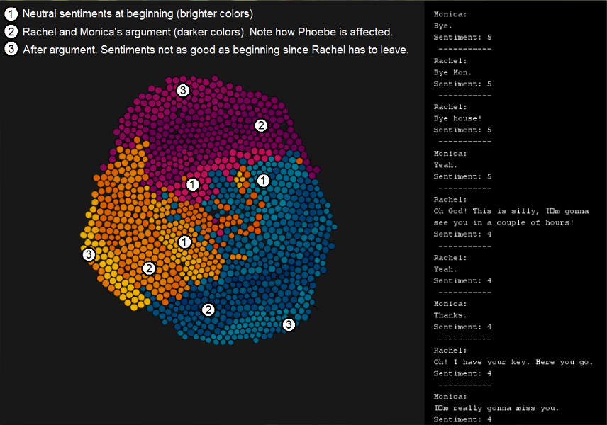

{kind=link}
{kind=link}
{kind=link}
{kind=link}
{kind=link}
{kind=link}
{kind=link}

Conversation Sentiments performs sentiment analysis on a conversation and visualizes the changes in sentiment during the conversation. Each user is associated with a color scheme and the colors get lighter or darker depending on whether the sentiment associated with what the user says is positive or negative. It shows trends in sentiment in the conversation and how turn taking is affected by sentiment.
This project uses AlchemyAPI and SentiWordNet for Sentiment Analysis
Conversation Sentiments is a CS 467 final project by
To view the visualization with the circles and physics download the processing sketch. You may need to install the pbox2d and json libraries included in the download
We applied our visualization to the Friends episode "The One on the Last Night" (Season 6, Episode 6). This episode is set in the night before Rachel moved out of Monica’s apartment to live with Phoebe. Rachel was moving out since Chandler was moving in to live with Monica. Since Rachel and Monica are really close roommates and friends, there were sad sentiments between Rachel and Monica. Phoebe’s role in the conversation was primarily to cheer them up and distract them. However, to make matters interesting, A quarrel started between Rachel and Monica about "things they would not miss about each other". Watch the video below to see this conversation visualized. (Rachel: pink/violet, Monica: Blue, Phoebe: Orange/Yellow). The start of the video shows the fast-forward version. The rest of the video is the real-time version for a deeper analysis. Please change video resolution to 720p or 1080p to view the conversation text clearly.
From the generated visualization, we can see a chronological record of the sentiments during the conversation is a ring-like structure. Closest to the center was when the conversation began. During the beginning, the participants of the conversation were busy with Rachel’s packing and thus had mostly neutral sentiments. Then the quarrel between Monica and Rachel began and we can see layers of darker shades. Interestingly, Phoebe also had darker shades during this time indicating that she was affected by the quarrel even though she was not involved in it. Finally, on the outermost layer, we see brighter colors when the quarrel was resolved. However, for Rachel and Monica, the outermost layer’s colors were darker than that of the innermost layer since it was time for Rachel to move out and both Monica and Rachel were feeling sad. However, Phoebe seems to be rather happy at the end that Rachel is moving in with her!
Note that the sentiments were rated between 1 to 10 manually and separately by the three of us and averaged. This was done since sentiment analysis tools were not generating accurate results.